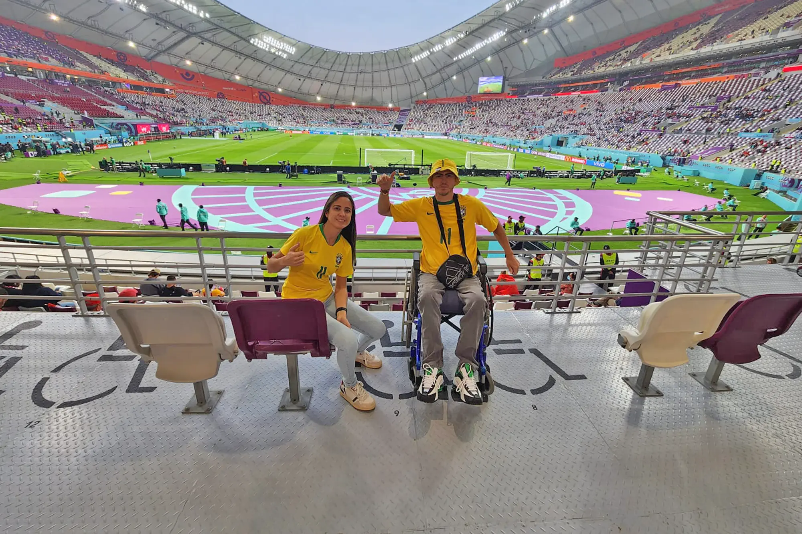

Rampas e elevadores

Rampas e elevadores permitem que pessoas com mobilidade reduzida circulem pelo estádio com mais autonomia e segurança.
A paixão pelo esporte não pode encontrar barreiras!
A experiência de acompanhar uma partida de futebol deve ser acessível a todos os torcedores. Entretanto, ainda existem barreiras que dificultam a participação de pessoas com deficiência.
Rampas e elevadores permitem que pessoas com mobilidade reduzida circulem pelo estádio com mais autonomia e segurança.
Os estádios devem oferecer espaços adequados para pessoas que utilizam cadeiras de rodas, além de assentos acessíveis para outros torcedores com deficiência.

Banheiros acessíveis são ainda um estigma nos estádios atuais, mas sua instalação é fundamentais para garantir conforto, autonomia e dignidade à todos os torcedores durante a experiência esportiva.

O acesso ao estádio começa antes mesmo da entrada. Calçadas adequadas, transporte acessível e locais apropriados para desembarque fazem parte dessa experiência e devem contar com colaboração tanto de clubes quanto das prefeituras locais.

Corredores, sinalizações e caminhos livres de obstáculos ajudam os torcedores a encontrar seus lugares e circular pelo estádio com independência.

A ausência de estruturas adequadas pode impedir que pessoas com deficiência aproveitem uma partida em condições semelhantes às dos demais torcedores.

A falta de educação e noção dos torcedoeres não-portadores de deficiências pode atrapalhar a experiência dessas pessoas.

Tab: Próximo elemento
Shift + Tab: Elemento anterior
Enter: Ativar links e botões
Espaço: Ativar botões
Setas (Cima/baixo): Auxiliam na leitura e rolamento da página
Utilize o teclado para navegar pelo site sem precisar do mouse.